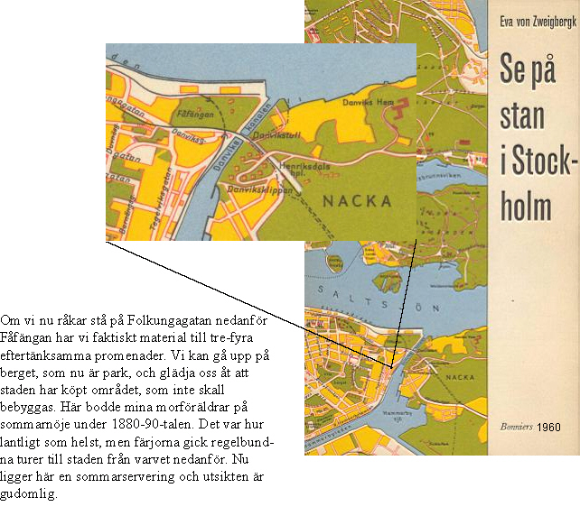
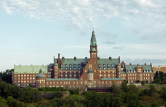

Södermalm i tid och rum. Stockholm

Prins Eugen bodde mittemot, och det var säkert inte med oblandade känslor han såg det nya bygget resa sig ur klippan - en produkt från den redan omdebatterade och starkt ogillade riksdagshusarkitekten Aron Johanssons ritbord. De protester han troligen, liksom många andra stockholmsälskare, privat framförde till överståthållaren -Danvikshems styrelseordförande - och andra ansvariga hjälpte inte. Den bombastiska granitbyggnaden, krönt med ett torn som en spränggranat, höjde sig obönhörligt och omgavs med sterila terrasser, upplagda av allsprängstenen. Målarprinsens protest tog sig dock ett uttryck: han avbildade aldrig detta hus, som han dagligen hade för ögonen. Han valde motivet till höger eller till vänster om Aron Johanssons hus.
Hur hade man råd att 1915 bygga ett sådant miljonpalats för några hundra gamla? Hur ser det egentligen utdärinne, hur lever man där sitt liv? Och vad är Danvikshemmets historia?
Svaret på den sista frågan är både långt och kusligt. Redan medeltiden hade sina ålderdomsproblem,som i stort sett sköttes genom enskildas barmhärtighet och av klostren. När dessa upplöstes vid reformationen lade Gustav Vasa beslag på klosterjorden, men småningom insåg han att staten måste överta en del av klostrens vårdande uppgifter, och han skänkte tillbaka ett antal klosterhemman till en stiftelse, som skulle ta hand om orkeslösa, sjuka, hittebarn och sinnessjuka. Det hospital, som skulle överta en mängd olika barmhärtighetsanstalters uppgift, ville kungen ha ut ur staden. Han tyckte det blev ond stank och smitta från klostret på Gråmunkeholmen, och 1551 skrev han det beslut, som flyttadeinrättningen till Danviken, och vari han skänkte de ansenliga hemmanen Duvnäs, Järla och Hammarby, lägenheterna Skuru och Sickla samt Danviks kvarn till de fattiga. Under årens lopp har nya väsentliga donationer gjorts till Danviken.Vidare uttogs vissa skatter och böter, som gick till hospitalet. Ännu idag måste varje fartyg som från utlandet kommer in i Stockholms hamn betala en viss procent på sitt bruttoregisterton till Danviken. Den s.k. Danvikspenningen blir nu visserligen inte mer än 18-20 00 kronor om året, men ändå!
Naturligtvis var livet på Danviken ganska outhärdligt så länge alla kategorier blandades, framförallt desinnessjuka med veneriskt sjuka, alkoholister, veteraner och normala åldringar. Danvikens rykte var dåligt.Vi kan läsa om det hos Lidner och Kellgren, i Love Almqvists och August Blanches skräckromantiska stockholmsskildringar. Den som kan "Fältskärns berättelser" minns hur gubben Larsson, som blivit av med Konungens ring, hamnade på dårkistan och försökte mörda Gustav III på nådigt besök, då gubben såg ringen infattad i en medaljong på det kungliga bröstet. Denna inblick från Danvikslivet tror Gustaf Näsström, Danvikens krönikör, kommer från Zacharias Topelius far, som en kort tid var fattigläkare i Stockholm och som måste ha skildrat sina erfarenheter för sonen.
Men trots allt var Danviken den svenska socialvårdens vagga. Och när vårt första sinnessjukhus, Konradsberg, på 1860-talet stod färdigt, blev livet därute helt annorlunda. Berömda 1800-talsläkare som C.U. Sondén, den svenska psykiatrins fader, och Magnus Huss, folkhälsans apostel, hade stor del i detta.En kyrka hade byggts 1725 av Göran Adelcrantz och undan för undan tillkom nya vårdbyggnader. Men att Danvikshemmet var urvuxet och omodernt vid sekelskiftet är självklart. Tomtmark hade det övernog, och pengar dessutom. Det måste ha varit i något slags ånger över gamla synder, som styrelsen beslöt ett så skrytsamt och dyrbart hus som det vi nu ser på klippans branter.
|
 |
Redan 1892 påbörjades sprängningarna för grundarbetet men det dröjde till 19121915 innan byggnaden Danvikshem restes av Kreuger & Toll i nationalromantisk stil, med Aron Johansson som arkitekt och Paul Toll som projektledare. Byggherre var Danvikens hospital. Till Danvikshem flyttades vården av äldre från hospitalet vid Danviken.
Den monumentala byggnaden med magnifikt läge vid Stockholms inlopp planerades för att härbärgera över fyrahundra boende. Från kyrksalen i 1725 års sjukhusbyggnad vid Danviken övertogs vissa inventarier vilka placerades i den nya kyrkan vid Finnboda. Danvikshem har byggts ut i olika omgångar, senast på 1980-talet. |
{kind=link}
Mellan Danvikshem och Vilans skola finns ett natur- och rekreationsområde på 1-2 ha i en sydsluttning. Beteckningen Engelska parken kommer antagligen från grönområdets karaktär som påminner om en engelsk park att blanda naturligt befintlig vegetation med parkliknande element som stenlagda stigar, trappor och blomsterodlingar. 2017 finns dock bara lite kvar av parkkaraktären. Trapporna från Danvikshem till Engelska parken samt mellan de olika nivåerna i parken har inte underhållits. Odlingarna syns endast kvar genom att odlade blommor (t.ex. iris) växer på våren i undervegetationen.
Idag är det mycket eftersträvansvärt att komma in på Danvikshem. Där är lägre avgifter än på Stockholmsålderdomshem. För 2 700 kronor om året får man ett eget rum med full kost och veckostädning. Man ordnar sitt rum som man vill, man skall ha egna möbler, eget linne och porslin, vilket uppskattas av gammalt folk, får ha egen telefon och komma och gå efter behag. Dessutom må man gärna ha en sparad slant. Man måste helt enkelt garantera att man har 90 kronor i månaden till fickpengar. Därför finner man gamla människor ur alla socialgrupper på Danvikshem, och de flesta trivs utomordentligt väl. Man måste göra nya bekantskaper, tack vare tvånget att äta vid småbord i flera mindre matsalar. Bara orkeslösa serverar man på rummet eller flyttar över till sjukavdelning. Rummen är inte stora, men de är 350 små hem, alla med något slags vacker utsikt. Och det ordnas mycket föredrag, cirklar, utflykter osv. för pensionärer i detta välskötta ålderdomshotell, dit skattebetalarna inte bidrar med ett enda öre, fastän de verkliga omkostnaderna är nästan tredubbelt högre än avgiften.
Frånsett rummen är huset invändigt ingalunda trivsamt. Men det är bekvämt att bo där, och stämningen vänlig. När hemmet vart tredje år annonserar att det tar emot ansökningar från 60-80-åringar strömmar de in, men knappt en tredjedel av alla som söker kan placeras.
Båtlivet på vattnet, vyn över hela Stockholm, den sommartid gnistrande utsikten över Djurgården roar pensionärerna. En vacker park och blommande trädgård saknas tyvärr i väntan på stadsplan inför den hotande österleden, fastän det finns god plats för en park nere i dalen. Ännu äger Danviken sexton jordbrukshemman. En del mark som Gustav Vasa skänkte är såld, bl.a. till Saltsjökvarn och staden, Ryssviken är emellertid ännu intakt.Den stora skandalen är väl att den fina gamla kyrkan av staden har upplåtits till småindustrier, som staplar cementsäckar och marmorskivor kring de joniska portalerna - se själv förödelsen bredvid Saltsjökvarn! - samt att Danvikens fina altartavlor finns på Statens Historiska Museum. Den nya kyrkan innanför murarna är stor, kylig och trist, det är bara det vackra silvret man har fått behålla.